第1回
トランジスタのしくみ
アナログ回路入門シリーズ第1回です。電子回路の単位がピンチのずんだもんと一緒に、トランジスタのしくみを基礎から見ていきます。
今のICのトランジスタは、ほとんどがCMOSという方式で作られたMOSFETです。まずバイポーラトランジスタとMOSFETの動作原理を比べ、断面図で「なぜ電流が流れるのか」（反転層・チャネル）を確かめます。測定回路と特性カーブから、遮断（サブスレッショルド）・線形・飽和の3つの動作領域と、電圧制御電流源として働く条件を解説。最後にPMOSと組み合わせたCMOSインバータまで扱います。
1導入：単位がピンチなのだ 動画 0:00
ずんだもん
めたん、大変なのだ！このままだと電子回路の単位がピンチなのだ！

2今のICのトランジスタ＝CMOS 動画 0:10
ずんだもん質問
お願いなのだ！そもそもトランジスタって、何をする部品なのだ？


ずんだもん質問
ほとんど、ということは、ほかの種類のトランジスタもあるのだ？


3バイポーラとMOSFETの違い 動画 0:40
ずんだもん質問
どっちも電流を流す部品なのに、何が違うのだ？


ずんだもん質問
ゲートからは、電流が流れ込むのだ？

ずんだもん
よろしくなのだ！

4MOSFETの記号と3つの端子 動画 1:35


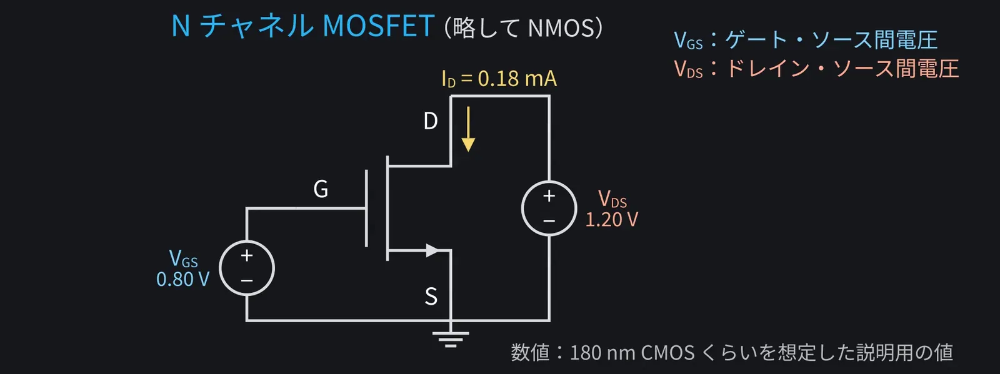
ずんだもん
電圧で電流が決まるって、回路理論で習った従属電源みたいなのだ！


スライダー（またはキーボードの矢印キー）で電圧を変えると、IDと動作領域が変わります。VGSをVthより下げたときの電流の小ささにも注目。
5なぜ電流が流れる？ 断面で見るチャネル 動画 2:22


ずんだもん質問
ソースとドレインの間はp型だから、電子は通れないのだ？


ずんだもん質問
通り道ができたら、電子はどっちへ流れるのだ？

ずんだもん質問
VGSをもっと上げると、チャネルが太くなるのだ？
6ID–VGS特性と2乗則 動画 3:44
ずんだもん
Vthまではほぼゼロで、そこから増え始めるのだ！


ずんだもん質問
VGS−Vthって、しきい値をどれだけ超えたかなのだ？
縦軸を対数に切り替えると、次の節のサブスレッショルド領域（Vthより下でも指数関数的に流れる電流）が見えます。
7ID の式の中身（μnCox・W/L とは何か。第2版の改訂で追加） 動画 4:12
ずんだもん質問
式に出てくるμnCoxとかW/Lって、何なのだ？
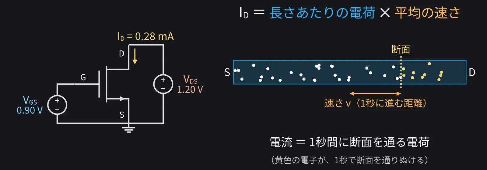
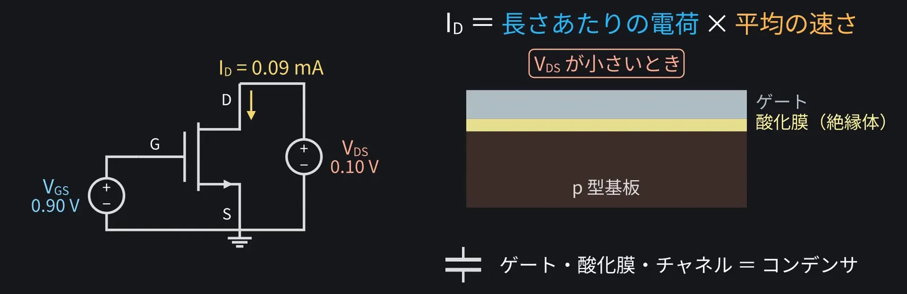
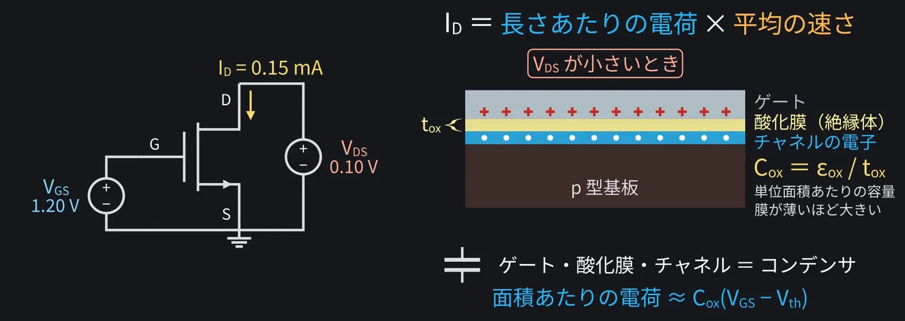
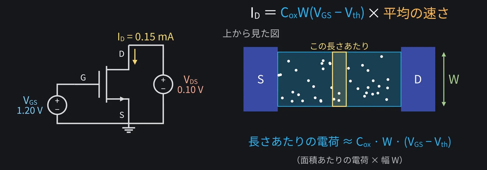
ずんだもん質問
じゃあ、電子の速さのほうは、何で決まるのだ？
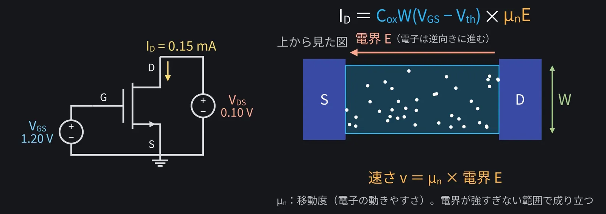
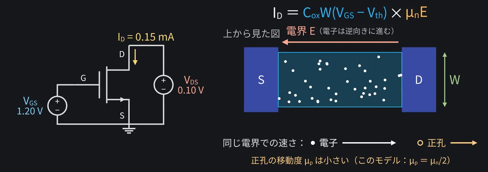
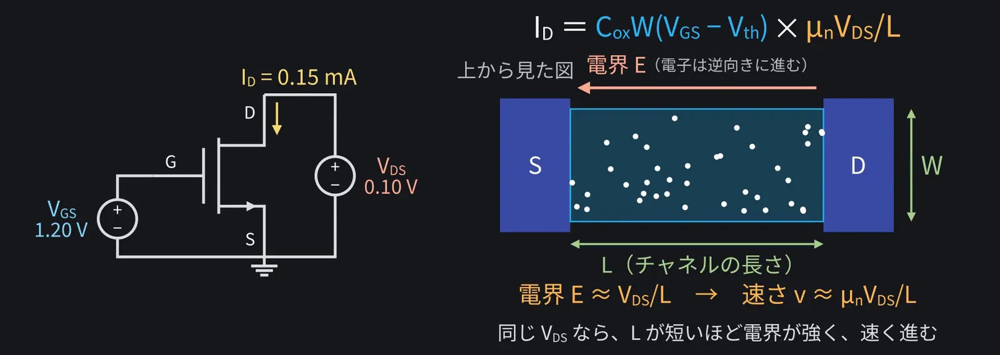
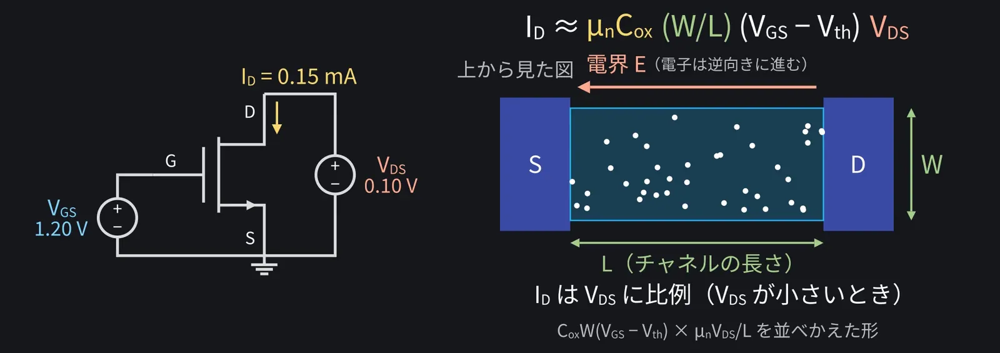
ずんだもん
道幅Wが広いと電子が多くて、道のりLが短いと電界が強くて速く進む。だから増えるのだ！
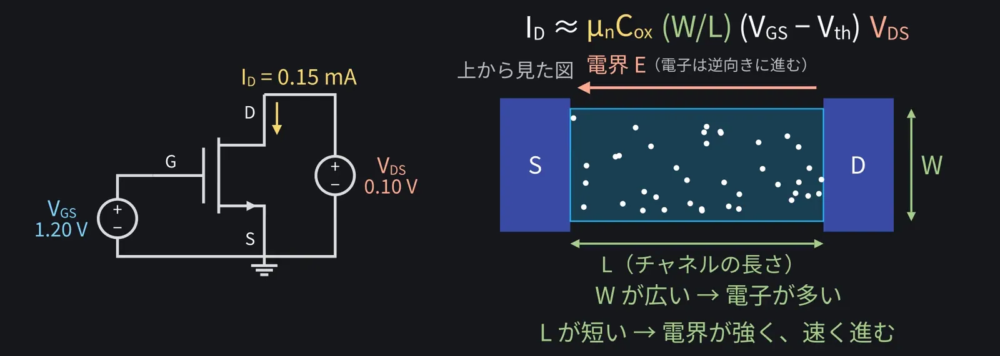
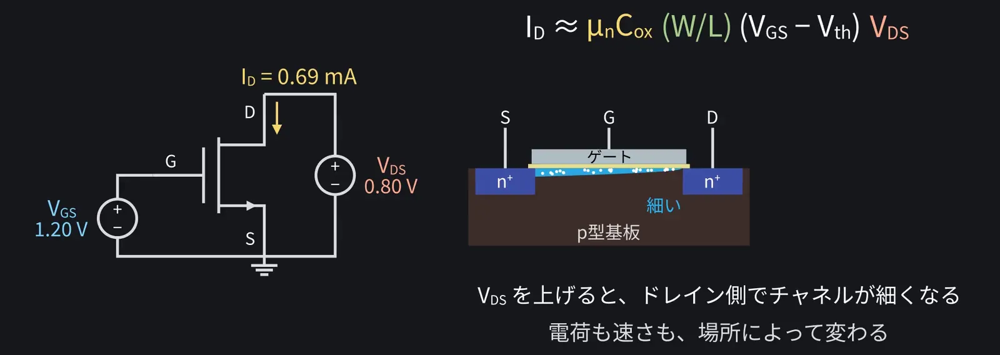
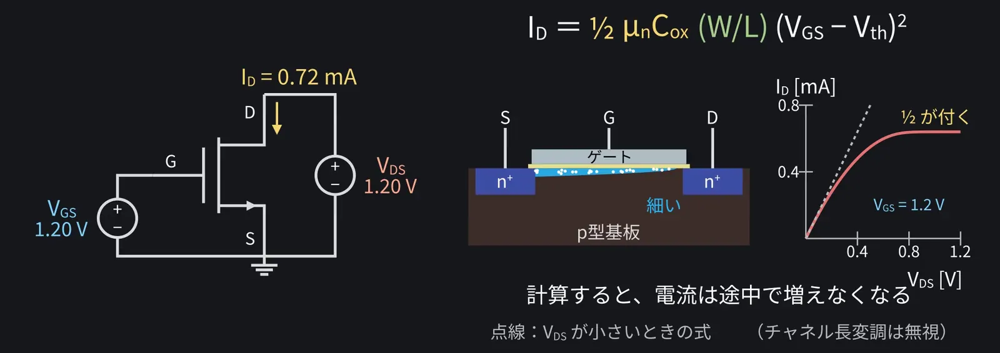
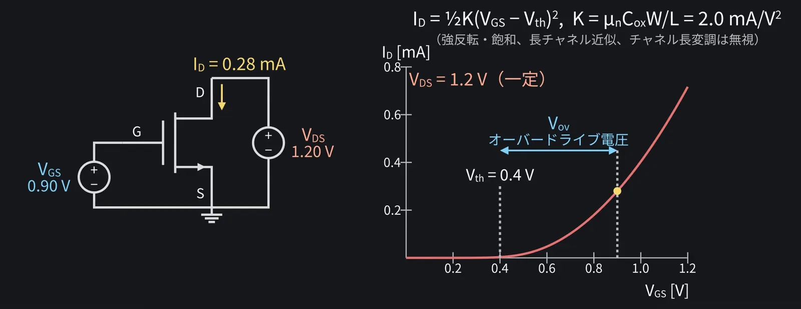
8サブスレッショルド領域 動画 5:55
ずんだもん質問
ところで、Vthより下だと、電流は本当にゼロなのだ？
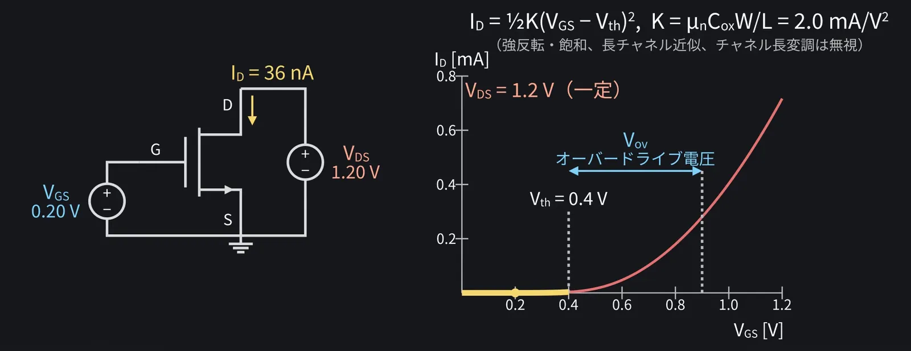
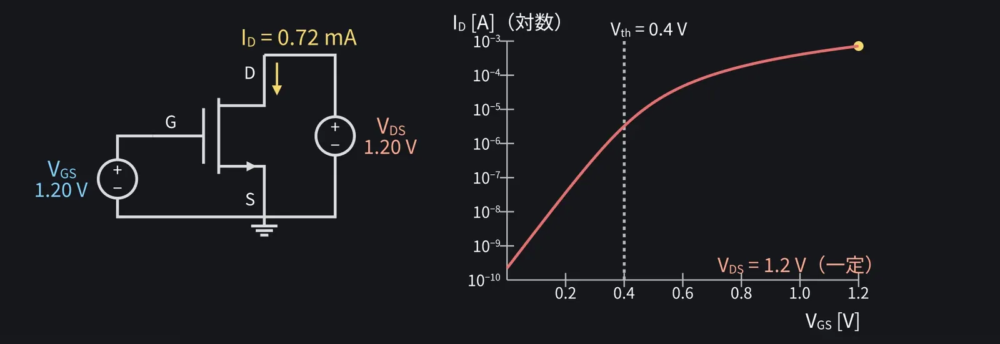
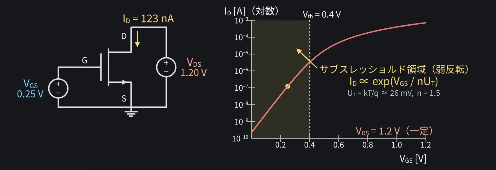
ずんだもん質問
ゼロじゃないなら、オフでも電流が漏れているのだ？
9ID–VDS特性と線形領域 動画 6:42
ずんだもん
最初はまっすぐ増えて、途中から平らになったのだ。
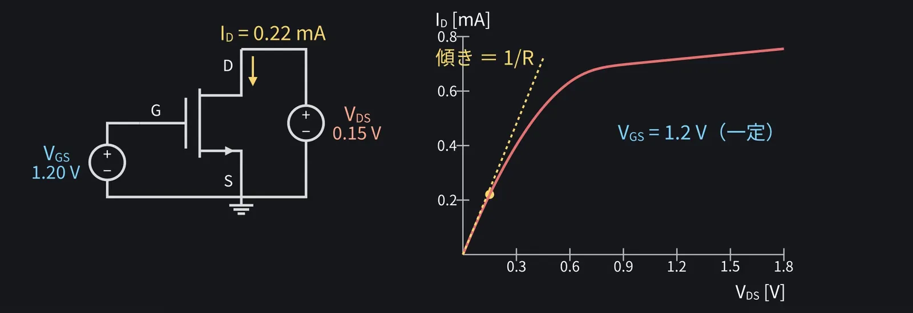
ずんだもん
VGSを変えると傾きが変わるのだ。可変抵抗みたいなのだ！
10ピンチオフ 動画 7:09
ずんだもん質問
じゃあ、どうして途中から平らになるのだ？
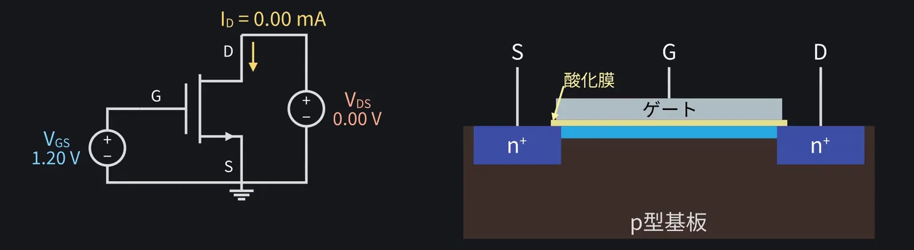
ずんだもん質問
チャネルが途切れたら、電流は止まっちゃうのだ？
11飽和領域と電圧制御電流源 動画 7:42
点線が境界VDS=VGS−Vth。VDSを境界より右へ動かすと、IDがほとんど変わらなくなります（少し右上がりなのはチャネル長変調）。
ずんだもん
飽和領域だと、VDSを変えても電流がほとんど変わらないのだ。
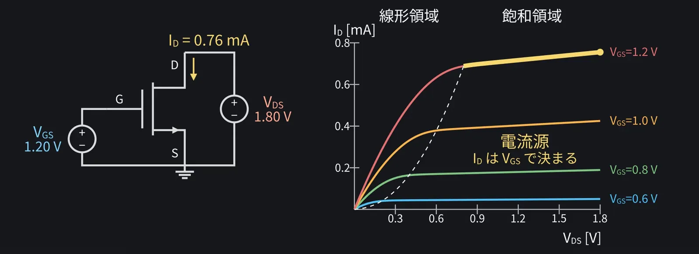
ずんだもん質問
だから増幅回路では、飽和領域で使うのだ？
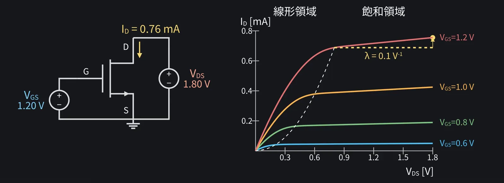
ずんだもん
完全な電流源ではないのだ。
12まとめ：3つの動作領域 動画 8:26
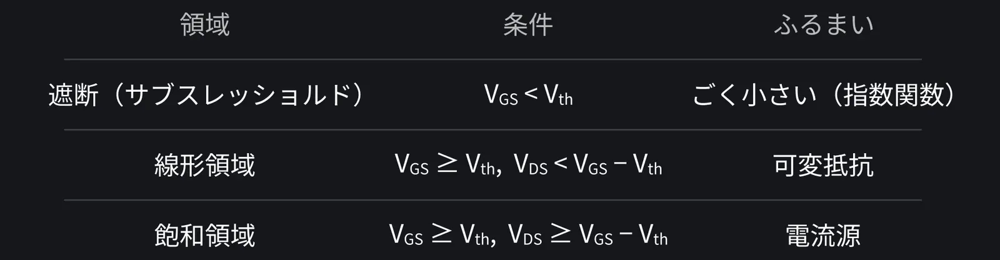
ずんだもん
VGSとVth、VDSとVGS−Vthを比べれば、どの領域かわかるのだ！
13PMOSとCMOSインバータ 動画 8:38
ずんだもん質問
そういえば、最初に出てきたCMOSって、結局なんなのだ？
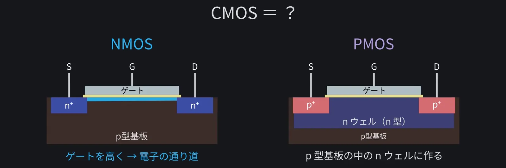
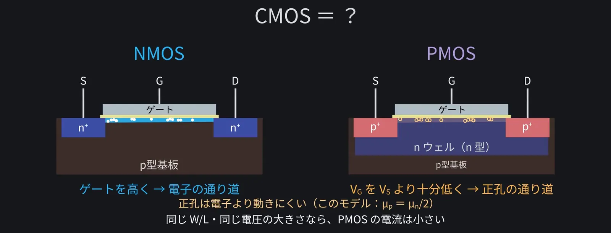
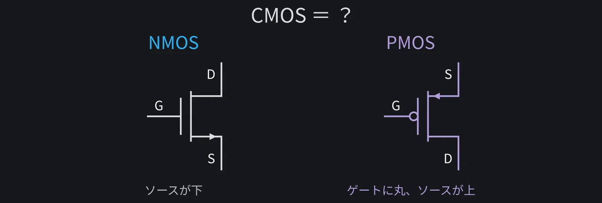
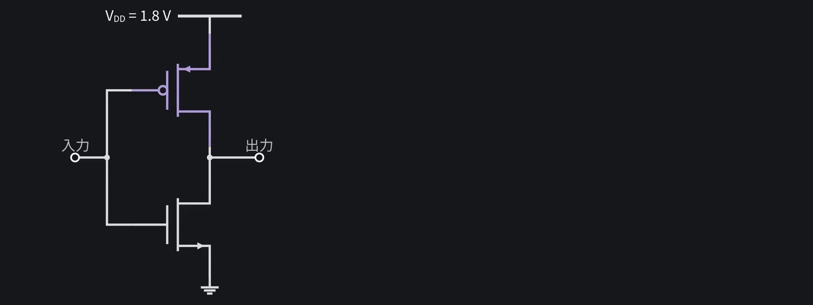
ずんだもん
入力と出力が、いつも反対になるのだ！
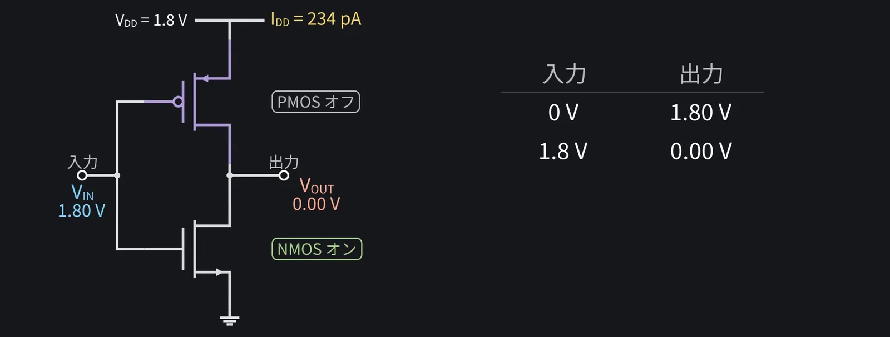
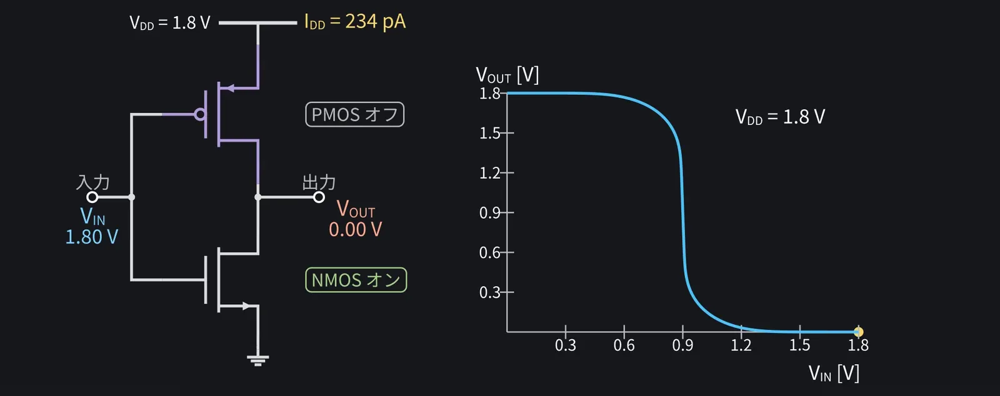
この例ではPMOSのW/LをNMOSより大きくして、電流の流しやすさ（K）をそろえています（倍率は図の下に表示）。入力が0かVDDのときは、どちらかがオフで電流がほとんど流れません。
ずんだもん質問
片方がオフになると、何がうれしいのだ？
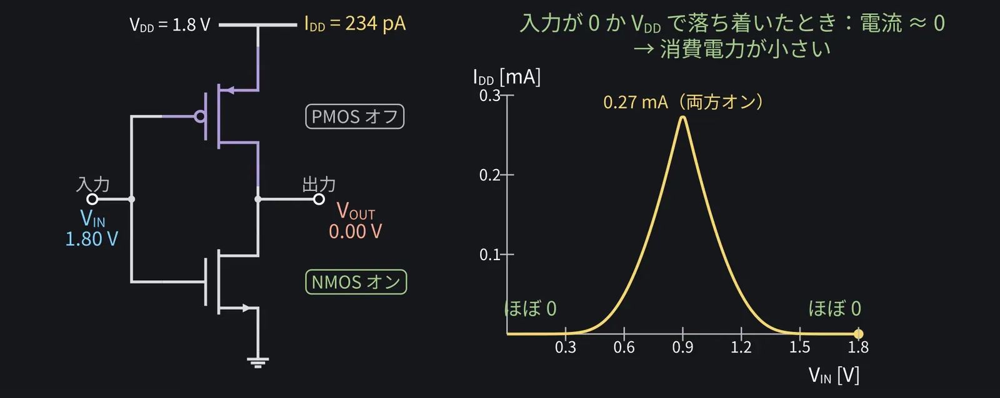
ずんだもん
最初の「今のICはCMOS」の意味が、やっとわかったのだ！
14次回予告 動画 10:31
ずんだもん
少し分かってきたのだ！ご視聴ありがとう、高評価とチャンネル登録もよろしくなのだ！